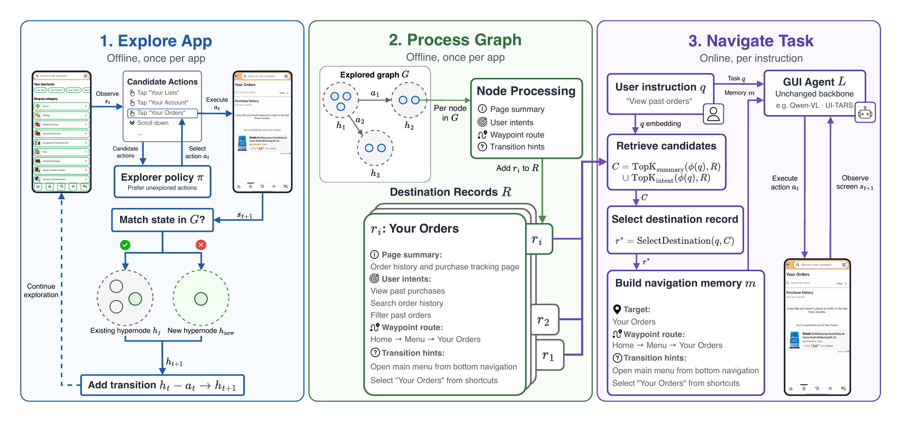

AACL-IJCNLP 2026 · Findings
Not All Graphs Are Maps A Task-Agnostic Exploration Framework for Mobile GUI Navigation
1Concordia University 2Mila – Quebec AI Institute 3McMaster University *Equal contribution

AACL-IJCNLP 2026 · Findings
1Concordia University 2Mila – Quebec AI Institute 3McMaster University *Equal contribution

A curated collection of real Android app navigation trajectories with natural-language instructions, frame-by-frame screenshots, and grounded UI actions for evaluating mobile GUI agents.
A random task plays on load. The instruction types out, then each screenshot appears with animated tap coordinates or scroll gestures, stepping through the agent path.
—
Click an application to browse its navigation tasks, then select a prompt to preview that trajectory.
Distribution of navigation tasks across applications in the benchmark.
@misc{orsini2026graphs,
title = {Not All Graphs Are Maps: A Task-Agnostic Exploration Framework for Mobile GUI Navigation},
author = {Orsini, Adamo and Ayyoubzadeh, Seyed Mehdi and Pinon, Sadman Rakib and Zhang, Hannuo and Baradari, Koosha Gholipour and Yu, Yuanhao and Zuo, Xinxin and Wang, Yang},
year = {2026},
eprint = {2610.22672},
archivePrefix = {arXiv},
primaryClass = {cs.AI},
note = {Findings of AACL-IJCNLP 2026},
url = {https://arxiv.org/abs/2610.22672}
}